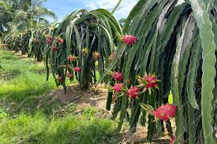
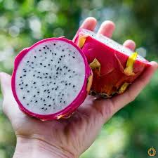

What Is Pitaya
A pitaya or pitahaya is the fruit of several different cactus species indigenous to the
region of southern Mexico and along the Pacific coasts of Guatemala, Costa Rica, and El Salvador.
The common name in English dragon fruit derives from the leather-like skin and scaly spikes on the fruit exterior.
What Does It Taste Like?
Pitaya, or Dragon Fruit, has a faint, sweet taste much like an earthy watermelon. All of its seeds give it the consistency of a kiwi.

Health Benefits
The Pitaya has many benefits such as:
- rich in magnesium
- high in fiber
- good source of iron
- rich in antioxidants
- rich in vitamin B

Uses
Dragon fruit is used to flavor and color juices and alcoholic beverages,
such as "Dragon's Blood Punch" and the "Dragotini".The flowers can be eaten or steeped as tea.